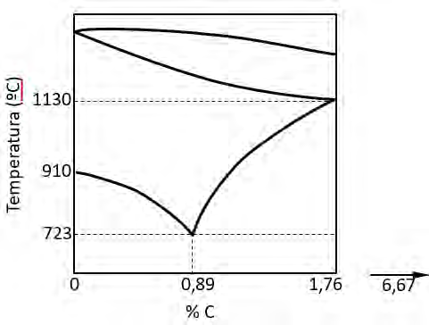
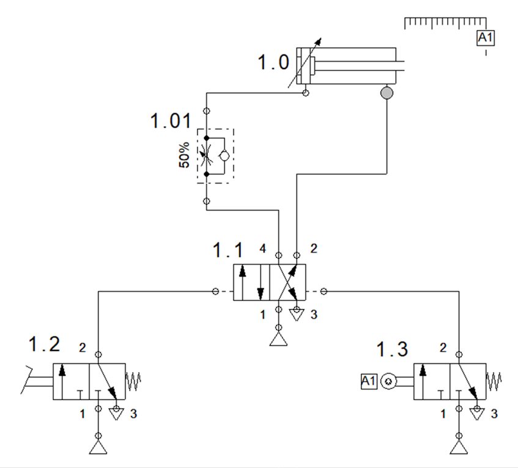
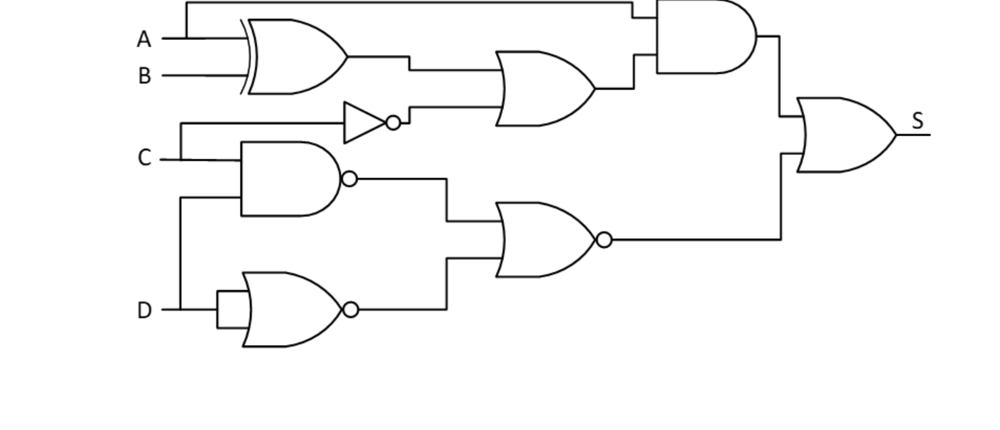
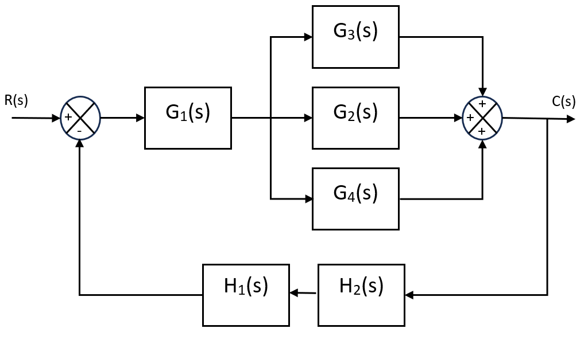

PAU 2025 · Tecnología e Ingeniería II · Cantabria · Ordinaria
El examen consta de 5 apartados de 2 puntos; en cada uno se elige una de las dos preguntas propuestas (el apartado 5 es único). Aquí se resuelven todas. Selecciona un apartado o una pregunta en la barra lateral: cada una incluye el enunciado oficial, una introducción con los conceptos que se aplican y la solución paso a paso.
Apartado 1 · Materiales
Elige una: diagrama Hierro-Carbono de un acero hipoeutectoide o ensayo de tracción de una probeta cilíndrica.
Apartado 2 · Termodinámica y neumática
Elige una: máquina de aire acondicionado (ciclo de Carnot) o análisis de un circuito neumático con regulador de caudal.
Apartado 3 · Sistemas digitales
Elige una: obtener y simplificar la función de un circuito lógico, o analizar y simplificar (Karnaugh + NAND/NOR) una función booleana dada.
Apartado 4 · Ciberseguridad e IA
Elige una: concepto de ciberseguridad con phishing y malware, o concepto de inteligencia artificial con impactos positivos y negativos.
Apartado 5 · Sistemas de control
Simplificación de un sistema de control con tres bloques en paralelo y estudio de estabilidad por el criterio de Routh.
📄 Enunciado
Disponemos de una aleación Hierro-Carbono de 180 kg con el 0,39 % de Carbono. A partir del diagrama de equilibrio Hierro-Carbono en la zona de los aceros de la Figura 1, se pide calcular:
- Masa sólida y líquida a la temperatura de 910 °C. (0,6 ptos.)
- Masa de ferrita y de cementita a la temperatura de 723,1 °C. (0,7 ptos.)
- Masa de ferrita dentro de la perlita a la temperatura de 722,9 °C. (0,7 ptos.)

💡 ¿Qué vamos a aplicar?
Es un acero hipoeutectoide (0,39 % < 0,89 %). A 910 ºC el punto está en pleno campo de la austenita (una sola fase sólida). Al enfriar precipita ferrita proeutectoide y, al cruzar los 723 ºC, la austenita restante (0,89 % C) forma perlita (ferrita + cementita). Se resuelve con la regla de la palanca (ferrita ≈ 0 % C, cementita 6,67 % C).
a) Masa sólida y líquida a 910 °C
A 910 ºC la vertical del 0,39 % C está por encima de la línea A₃ y muy por debajo de la solidus: el material es austenita (sólido monofásico). No hay fase líquida.
b) Masa de ferrita y de cementita
Justo por debajo de la eutectoide la estructura es ferrita (≈ 0 % C) + cementita (6,67 % C). Palanca global sobre el 0,39 % C:
c) Ferrita dentro de la perlita a 722,9 °C
La perlita procede de la austenita (0,89 % C) presente antes de la eutectoide:
Dentro de la perlita (0,89 % C), la fracción de ferrita eutectoide es:
📄 Enunciado
Se realiza un ensayo de tracción de un cierto material utilizando una probeta cilíndrica de 15 mm de diámetro y 20 cm de longitud. Se aplica una fuerza de tracción sobre la probeta, la cual se deforma elásticamente hasta que la fuerza alcanza los 12000 N, presentando la probeta en ese momento un alargamiento de 0,25 mm. Al aplicar una fuerza superior empiezan a producirse deformaciones plásticas hasta llegar a los 16000 N donde se produce la rotura de la probeta. Se pide:
- La tensión en el límite elástico. (0,5 ptos.)
- La tensión de rotura. (0,5 ptos.)
- El módulo de elasticidad E del material. (0,5 ptos.)
- El diagrama de tracción en la zona de comportamiento elástico del material. (0,5 ptos.)
💡 ¿Qué vamos a aplicar?
La tensión es fuerza entre sección inicial, \(\sigma=F/S_0\), con \(S_0=\frac{\pi}{4}D^2\). En la zona elástica se cumple la ley de Hooke \(\sigma=E\,\varepsilon\), con la deformación unitaria \(\varepsilon=\Delta l/L_0\); el módulo de elasticidad \(E\) es la pendiente de la recta.
Sección inicial de la probeta
a) Tensión en el límite elástico
b) Tensión de rotura
c) Módulo de elasticidad E
La deformación unitaria en el límite elástico (\(L_0=200\) mm):
d) Diagrama de tracción (zona elástica)
En la zona elástica es una recta desde el origen (0, 0) hasta el límite elástico (ε = 1,25·10⁻³ ; σ = 67,9 MPa):
📄 Enunciado
Se instala en un aula una máquina de aire acondicionado para conseguir una temperatura de 21 ºC. La temperatura en el exterior es de 28 ºC y el rendimiento de la máquina es del 45 % del ciclo de Carnot. Se pide:
- Eficiencia de la máquina. (0,8 ptos.)
- Calor que cede la máquina al exterior si la máquina absorbe 1875 kJ del interior del aula. (0,6 ptos.)
- Trabajo realizado por el compresor de la máquina. (0,6 ptos.)
💡 ¿Qué vamos a aplicar?
El aire acondicionado es una máquina frigorífica: extrae calor del foco frío (aula, 21 ºC) y lo cede al foco caliente (exterior, 28 ºC). Su eficiencia máxima (Carnot) es \(\varepsilon_{C}=\frac{T_f}{T_c-T_f}\); la real es el 45 % de ella. El balance energético es \(Q_c=Q_f+W\), con \(\varepsilon=Q_f/W\).
a) Eficiencia de la máquina
Temperaturas absolutas: \(T_f=21+273=294\text{ K}\), \(T_c=28+273=301\text{ K}\).
b) Calor cedido al exterior
El trabajo del compresor sale de \(\varepsilon=Q_f/W\) con \(Q_f=1875\text{ kJ}\), y el calor cedido del balance \(Q_c=Q_f+W\):
c) Trabajo del compresor
📄 Enunciado
Respecto al circuito neumático representado en la Figura 2 adjunta, se solicita:
- Identificar los componentes del circuito. (0,7 ptos.)
- Explicar el funcionamiento del circuito. (1 pto.)
- ¿Cómo se podría aumentar la velocidad de salida del vástago? (0,3 ptos.)

💡 ¿Qué vamos a aplicar?
Hay que reconocer la simbología neumática (norma ISO 1219) —cilindro, distribuidor, válvula reguladora de caudal y válvulas de mando— y razonar la secuencia de avance y retroceso del vástago, así como el papel del regulador en la velocidad.
a) Componentes del circuito
- 1.0 · Cilindro de doble efecto (con amortiguación). Actuador: avanza y retrocede con aire a presión en cada cámara. Lleva un final de carrera A1 al final de su recorrido.
- 1.01 · Válvula reguladora de caudal unidireccional (estranguladora con antirretorno), ajustada al 50 %. Estrangula el aire en un sentido (regulando la velocidad) y lo deja pasar libre en el contrario.
- 1.1 · Distribuidor 5/2 (biestable, pilotado neumáticamente por ambos extremos). Mando principal: 5 vías (1 alimentación, 2 y 4 utilización, 3 y 5 escapes) y 2 posiciones.
- 1.2 · Válvula 3/2 (NC, retorno por muelle) accionada por pulsador/palanca: señal de marcha que pilota la 5/2 para el avance.
- 1.3 · Válvula 3/2 (NC, muelle) accionada por el final de carrera A1: pilota la 5/2 en sentido contrario para el retroceso.
b) Funcionamiento del circuito
- Reposo: la 5/2 mantiene el vástago recogido; nada actúa.
- Accionamiento: al pulsar 1.2 se pilota la 5/2, que conmuta y envía aire a la cámara trasera del cilindro: el vástago avanza. La válvula reguladora 1.01 estrangula el caudal, de modo que el avance se produce a velocidad controlada (≈ 50 %).
- Secuencia: al llegar el vástago al final de su carrera acciona el final de carrera A1, que abre la válvula 1.3; ésta pilota la 5/2 por el otro extremo y el vástago retrocede.
- Vuelta a reposo: el cilindro queda recogido; como la 5/2 es biestable, memoriza la posición hasta una nueva orden de marcha.
c) Aumentar la velocidad de salida del vástago
El avance está frenado por el regulador 1.01 (al 50 %). Para que el vástago salga más rápido se puede abrir más (o eliminar) el regulador 1.01, aumentando el caudal de entrada; alternativamente, instalar una válvula de escape rápido en la cámara que se vacía durante el avance, para evacuar su aire directamente a la atmósfera.
📄 Enunciado
Obtener la ecuación lógica correspondiente al circuito de la Figura 3 y simplificar algebraicamente todo lo posible.

💡 ¿Qué vamos a aplicar?
Se recorre el circuito por niveles, escribiendo la salida de cada puerta (XOR = 1, NOT, NAND/NOR con círculo, OR = ≥1, AND = &). Luego se agrupa el álgebra de Boole aplicando De Morgan y la propiedad \(A\cdot(A\oplus B)=A\bar B\).
Nivel 1 — salida de las puertas de entrada
Además, la entrada A se lleva directamente (por arriba) a la puerta AND del nivel 3.
Nivel 2 — puertas OR y NOR
La OR superior combina la XOR y \(\bar C\); la NOR inferior combina la NAND y \(\bar D\):
Nivel 3 — puerta AND
Nivel 4 — puerta OR de salida
Simplificación algebraica
Como \(A\cdot(A\oplus B)=A(\bar AB+A\bar B)=A\bar B\):
📄 Enunciado
Una máquina dispone de tres pulsadores identificados como a, b y c. El funcionamiento sigue la función booleana S:
Se pide:
- Obtener la tabla de verdad de la función lógica. (0,6 ptos.)
- Obtener su función booleana en primera forma canónica (suma de productos o minterms). (0,4 ptos.)
- Simplificar la función mediante el método de Karnaugh. (0,5 ptos.)
- Implementar la función simplificada utilizando únicamente puertas lógicas de dos entradas NAND o NOR. (0,5 ptos.)
💡 ¿Qué vamos a aplicar?
Se evalúa la expresión en las 8 combinaciones para construir la tabla de verdad, de la que sale la forma canónica en minterms. El mapa de Karnaugh agrupa los unos adyacentes, y la forma mínima se implementa con NAND (doble negación + De Morgan).
a) Tabla de verdad
Evaluando \(S=bc+\bar a\bar b\bar c+\bar a b\) en cada fila:
| a | b | c | S |
|---|---|---|---|
| 0 | 0 | 0 | 1 |
| 0 | 0 | 1 | 0 |
| 0 | 1 | 0 | 1 |
| 0 | 1 | 1 | 1 |
| 1 | 0 | 0 | 0 |
| 1 | 0 | 1 | 0 |
| 1 | 1 | 0 | 0 |
| 1 | 1 | 1 | 1 |
b) Primera forma canónica (minterms)
c) Simplificación por Karnaugh
| a\bc | 00 | 01 | 11 | 10 |
|---|---|---|---|---|
| 0 | 1 | 0 | 1 | 1 |
| 1 | 0 | 0 | 1 | 0 |
Columna bc = 11 (m3, m7) → \(b\,c\). Unos de la fila a = 0 en 00 y 10 (m0, m2), es decir \(a=0,\ c=0\) → \(\bar a\,\bar c\):
d) Implementación con NAND de dos entradas
Como \(S=bc+\bar a\bar c=\overline{\overline{bc}\cdot\overline{\bar a\bar c}}\), y usando inversores NAND para \(\bar a\) y \(\bar c\), bastan 5 puertas NAND-2:
📄 Enunciado
Defina qué es la ciberseguridad y describa qué es y cómo funcionan el phishing y el malware.
📄 Ver esta pregunta resuelta (PDF)💡 ¿Qué vamos a aplicar?
Definir el concepto y explicar el funcionamiento de dos amenazas muy habituales.
¿Qué es la ciberseguridad?
La ciberseguridad es el conjunto de técnicas, herramientas y buenas prácticas destinadas a proteger los sistemas informáticos, las redes y los datos frente a accesos no autorizados, ataques o daños, garantizando la confidencialidad, integridad y disponibilidad de la información.
Phishing
El phishing es una técnica de ingeniería social: el atacante envía correos, mensajes o crea webs falsos que suplantan a una entidad de confianza (banco, red social, administración). Engaña a la víctima para que revele datos sensibles (contraseñas, números de tarjeta) o haga clic en enlaces/adjuntos maliciosos. Funciona explotando la confianza y la urgencia ("su cuenta será bloqueada"), no un fallo técnico.
Malware
El malware (software malicioso) es cualquier programa diseñado para dañar o infiltrarse en un equipo sin permiso: virus, troyanos, gusanos, ransomware o spyware. Se instala al abrir un archivo infectado, un enlace o una descarga, y una vez dentro puede robar información, cifrar los datos para pedir un rescate, espiar al usuario o tomar control del sistema.
📄 Enunciado
¿Qué se entiende por Inteligencia artificial? Describa dos impactos positivos y dos negativos que la inteligencia artificial puede tener en la sociedad.
📄 Ver esta pregunta resuelta (PDF)💡 ¿Qué vamos a aplicar?
Definir el concepto de IA y valorar de forma equilibrada sus efectos sociales.
¿Qué es la inteligencia artificial?
La inteligencia artificial (IA) es la rama de la informática que desarrolla sistemas capaces de realizar tareas que normalmente requieren inteligencia humana —aprender de los datos, razonar, reconocer patrones, comprender el lenguaje o tomar decisiones—, mejorando su comportamiento con la experiencia (aprendizaje automático).
Dos impactos positivos
- Avances en medicina y ciencia: ayuda al diagnóstico precoz (análisis de imágenes médicas), al descubrimiento de fármacos y a la investigación, salvando vidas y ganando precisión.
- Automatización y productividad: libera a las personas de tareas repetitivas o peligrosas, mejora la eficiencia industrial y ofrece servicios personalizados (asistentes, traducción, accesibilidad).
Dos impactos negativos
- Destrucción/transformación del empleo: la automatización puede eliminar puestos de trabajo y aumentar la desigualdad si no se acompaña de formación y reorientación laboral.
- Privacidad, sesgos y desinformación: el uso masivo de datos personales amenaza la privacidad, los algoritmos pueden heredar sesgos discriminatorios y la IA generativa facilita bulos y deepfakes.
📄 Enunciado
Dado el sistema de control de la Figura 4, se pide:
- Simplifica al máximo el sistema de control (obtén su función de transferencia). (1,2 ptos.)
- La expresión (2) representa el denominador de la función de transferencia del sistema. Determinar, mediante el método de Routh, si el sistema es estable e indicar el número de polos. (0,8 ptos.)

💡 ¿Qué vamos a aplicar?
Las ramas en paralelo se suman (G₂+G₃+G₄); los bloques de realimentación en serie se multiplican (H₁·H₂); y el lazo cerrado con realimentación negativa aplica \(\frac{G}{1+GH}\). La estabilidad se estudia con el criterio de Routh sobre el denominador.
a) Simplificación del sistema
Los tres bloques reciben la misma entrada (salida de G₁) y sus salidas se suman: van en paralelo → \(G_2+G_3+G_4\). La cadena directa es entonces \(G_1(G_2+G_3+G_4)\). La realimentación en serie es \(H_1H_2\).
Cerrando el lazo (realimentación negativa) con \(\frac{G}{1+GH}\):
b) Estabilidad por el criterio de Routh
Denominador (grado 5): coeficientes 1, 2, 18, 20, 46, 64. Tabla de Routh:
| s⁵ | 1 | 18 | 46 |
|---|---|---|---|
| s⁴ | 2 | 20 | 64 |
| s³ | 8 | 14 | 0 |
| s² | 16,5 | 64 | |
| s¹ | −17,03 | 0 | |
| s⁰ | 64 |
Primera columna: \(1,\ 2,\ 8,\ 16{,}5,\ -17{,}03,\ 64\). Hay dos cambios de signo (de 16,5 a −17,03 y de −17,03 a 64).